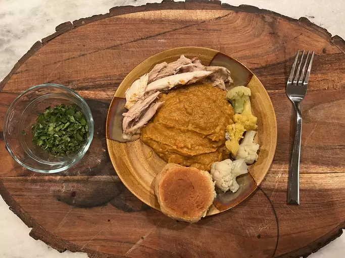

Home
Pav Bhaji

Description
Pav bhaji is a popular Indian street food consisting of a spicy, mashed vegetable curry (bhaji) served with buttered, toasted bread rolls (pav). The curry is made with a mix of vegetables like potatoes, peas, and carrots, cooked with aromatic spices and pav bhaji masala. The dish is often garnished with fresh cilantro and a squeeze of lemon for extra flavor.
ingredients
- Mixed vegetables (potatoes, peas, carrots, etc.)
- Onions
- Tomatoes
- Bell peppers
- Pav bhaji masala
- Butter
- Green chilies
- Ginger-garlic paste
- Lemon
- Pav (bread rolls)
- Fresh cilantro
Steps
-
Boil and mash the mixed vegetables. Sauté onions, tomatoes, bell
peppers, ginger-garlic paste, and green chilies in butter. Add pav bhaji
masala and cook.
-
Add mashed vegetables, salt, and water to make a thick curry. Simmer for
10-15 minutes.
-
Toast pav in butter, serve with bhaji, and garnish with lemon and
cilantro.